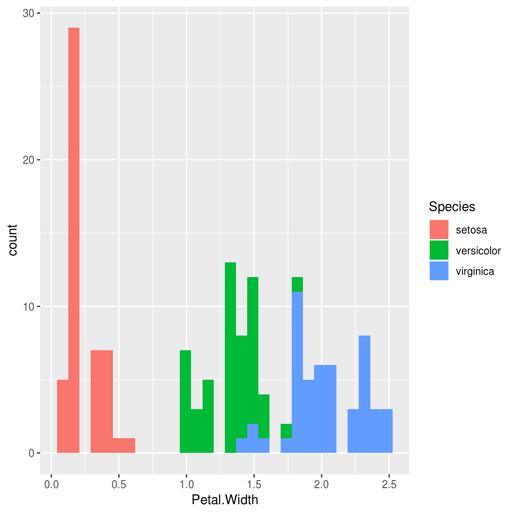
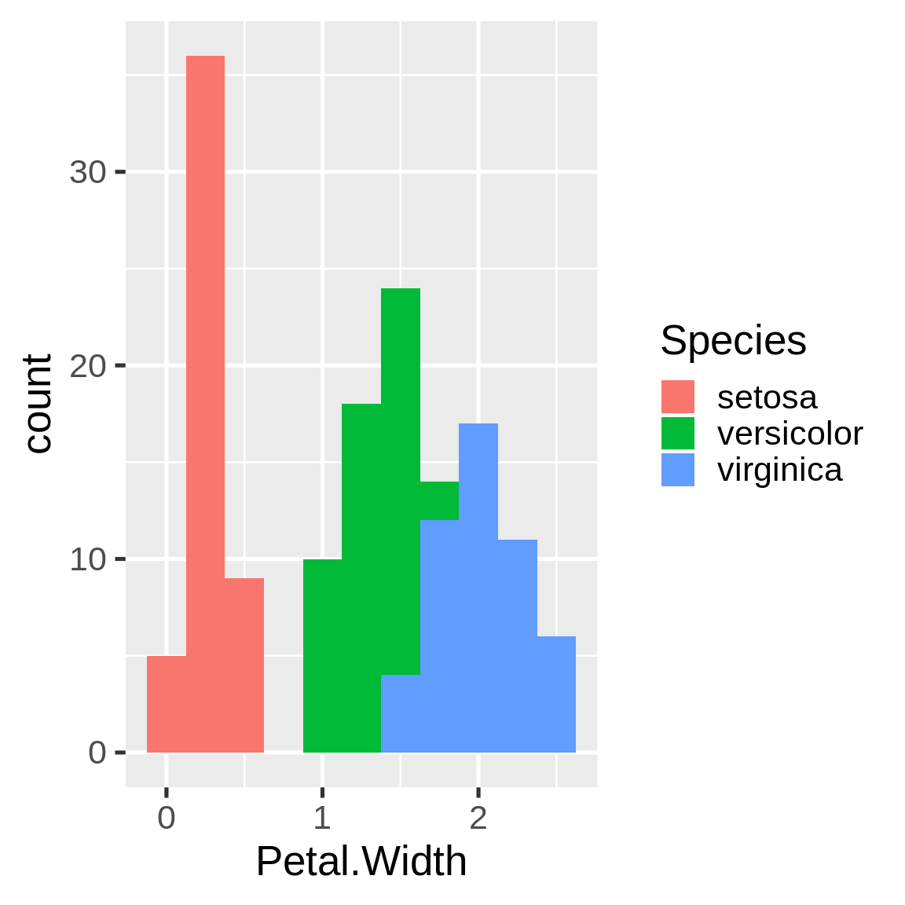

Chapter 2 The main example
A typical data analysis workflow is a sequence of data transformations. Raw data becomes tidy data, then turns into fitted models, summaries, and reports.

Other analyses are usually variations of this pattern, and drake can easily accommodate them.
2.1 Set the stage.
To set up a project, load your packages,
library(drake)
library(dplyr)
library(ggplot2)load your custom functions,
create_plot <- function(data) {
ggplot(data, aes(x = Petal.Width, fill = Species)) +
geom_histogram()
}check any supporting files (optional),
## Get the files with drake_example("main").
file.exists("raw_data.xlsx")
## [1] TRUE
file.exists("report.Rmd")
## [1] TRUEand plan what you are going to do.
plan <- drake_plan(
raw_data = readxl::read_excel(file_in("raw_data.xlsx")),
data = raw_data %>%
mutate(Species = forcats::fct_inorder(Species)) %>%
select(-X__1),
hist = create_plot(data),
fit = lm(Sepal.Width ~ Petal.Width + Species, data),
report = rmarkdown::render(
knitr_in("report.Rmd"),
output_file = file_out("report.html"),
quiet = TRUE
)
)
plan
## # A tibble: 5 x 2
## target command
## * <chr> <chr>
## 1 raw_data "readxl::read_excel(file_in(\"raw_data.xlsx\"))"
## 2 data "raw_data %>% mutate(Species = forcats::fct_inorder(Species)) …
## 3 hist create_plot(data)
## 4 fit lm(Sepal.Width ~ Petal.Width + Species, data)
## 5 report "rmarkdown::render(knitr_in(\"report.Rmd\"), output_file = fil…Optionally, visualize your workflow to make sure you set it up correctly. The graph is interactive, so you can click, drag, hover, zoom, and explore.
config <- drake_config(plan)
vis_drake_graph(config)2.2 Make your results.
So far, we have just been setting the stage. Use make() to do the real work. Targets are built in the correct order regardless of the row order of plan.
make(plan)
## target raw_data
## target data
## target fit
## target hist
## target reportExcept for output files like report.html, your output is stored in a hidden .drake/ folder. Reading it back is easy.
readd(data) # See also loadd().
## # A tibble: 150 x 5
## Sepal.Length Sepal.Width Petal.Length Petal.Width Species
## <dbl> <dbl> <dbl> <dbl> <fct>
## 1 5.1 3.5 1.4 0.2 setosa
## 2 4.9 3 1.4 0.2 setosa
## 3 4.7 3.2 1.3 0.2 setosa
## 4 4.6 3.1 1.5 0.2 setosa
## 5 5 3.6 1.4 0.2 setosa
## 6 5.4 3.9 1.7 0.4 setosa
## 7 4.6 3.4 1.4 0.3 setosa
## 8 5 3.4 1.5 0.2 setosa
## 9 4.4 2.9 1.4 0.2 setosa
## 10 4.9 3.1 1.5 0.1 setosa
## # ... with 140 more rowsThe graph shows everything up to date.
vis_drake_graph(config)2.3 Go back and fix things.
You may look back on your work and see room for improvement, but it’s all good! The whole point of drake is to help you go back and change things quickly and painlessly. For example, we forgot to give our histogram a bin width.
readd(hist)
## `stat_bin()` using `bins = 30`. Pick better value with `binwidth`.
So let’s fix the plotting function.
create_plot <- function(data) {
ggplot(data, aes(x = Petal.Width, fill = Species)) +
geom_histogram(binwidth = 0.25) +
theme_gray(20)
}Drake knows which results are affected.
vis_drake_graph(config)The next make() just builds hist and report. No point in wasting time on the data or model.
make(plan)
## Unloading targets from environment:
## raw_data
## data
## target hist
## target reportloadd(hist)
hist
2.4 Try it yourself!
Use drake_example("main") to get all the materials.